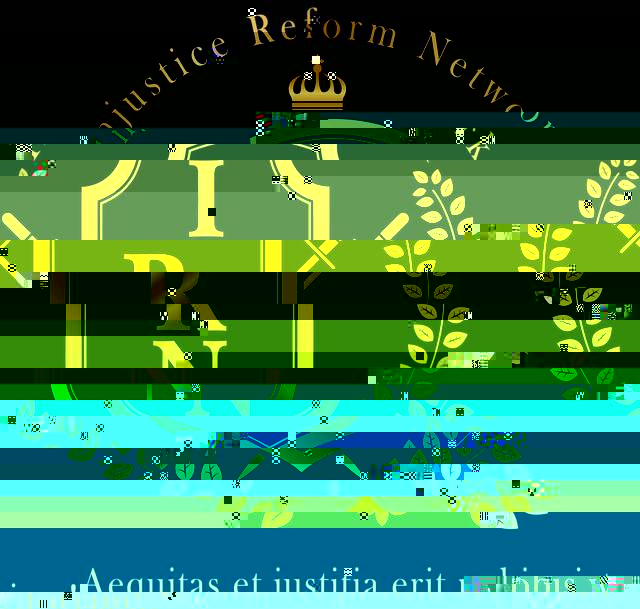
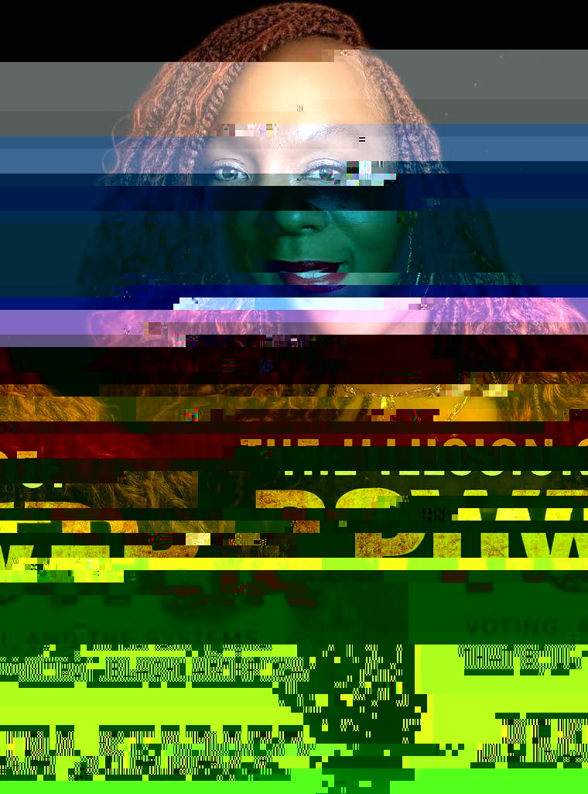
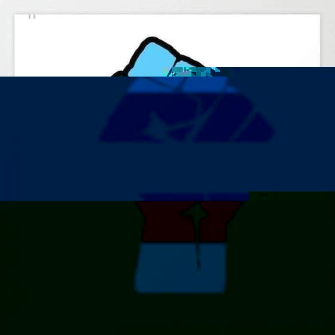
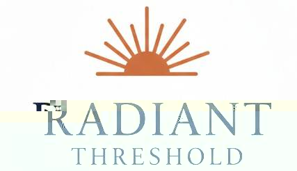

Connect & Support
Join the Network

Follow · Share · Support
The Injustice Reform Network operates on community power. Follow us on Facebook, share the Dispatch with your network, and support the work.

Published by the Injustice Reform Network. Because power hates witnesses.
Across Hampton Roads and beyond, residents continue reporting barriers to housing, healthcare, public safety, and legal support. The issue is no longer isolated incidents. The issue is infrastructure.
When systems break, people do not disappear.
They improvise. They organize. They survive.
The question is whether institutions will catch up before communities are forced to build entirely new ones.
A resident reports repeated failures navigating overlapping social service agencies while attempting to secure emergency assistance.
Every delay becomes:
If a system failed you — or worked for you — submit a community report. The truth belongs in the record.

From the network's Virginia headquarters, IRN Founder & President BeKura Waliah Shabazz has put the whole conversation between two covers. The Illusion of Power takes on the machinery most folks are told to trust — the ballot box, the algorithm, the institution — and asks who actually holds the levers, and who is being handed a replica.
From voting systems to artificial intelligence, the book maps how control gets laundered through process — and what it takes to build power that doesn't evaporate the day after the election. Analysis, receipts, and a field manual for anyone done mistaking access for ownership.
Availability and launch events will be announced through the Member Platform; Vol. 02 carries an author Q&A.
The formal accountability campaign concerning the Petersburg/Newport News NAACP branch leadership remains active, filed with the Virginia State Conference on behalf of IRN Founder & President BeKura Waliah Shabazz. A formal accountability brief has been submitted, and the network is monitoring the Conference's response.
Accountability isn't a vibe — it's a process with a paper trail. We hex systems, not people. Updates will run in the next Dispatch.
IRN's Virginia operation is scaling across the Seven Cities — Newport News, Hampton, Norfolk, Portsmouth, Virginia Beach, Chesapeake, and Suffolk — bringing the full toolkit to the region: rapid response, post-conviction education, family advocacy, and community-authored policy.
Thank God I Transitioned arrives not as apology but as praise song. Where the world demands trans people narrate their survival as tragedy, this release flips the register entirely — transition as blessing, as homecoming, as the answered prayer. The cover says it before page one does: arms open, sun at the back, wings made of every color the ancestors handed down.
It joins two decades of work insisting that TGEPOC lives are not a problem to be managed but a future to be resourced — and it lands alongside the TRANSPOWER visual series now in circulation across the network.
Release details, readings, and ordering info will run through the Member Platform and the next Dispatch.

The sovereign command center is no longer a concept deck — it's running. IRN OS v2 ships as a single-file application housing eleven-plus fully functional tools: the CJRRP intake wizard, Case Tracker, Attorney Network, Evidence Vault, FOIA Generator, Motion Builder, Petition Builder, and more. Every tool is local-first by design, which means the data lives with the people it belongs to — not on a server waiting to be subpoenaed.
The next phase is confirmed: migration to a Next.js + Supabase + Clerk architecture, scaling the OS into networked infrastructure without compromising the Technical Incapacity standard that anchors everything the network builds.

Founded and led by IRN Vice President Aziza "Zee" Okoro, Radiant Threshold Staffing Solutions continues its mandate: workforce development as a doorway, not a gate. Job placement, peer-support credentialing, and re-entry employment pipelines for the people every other staffing agency screens out. The sun on the logo isn't decoration — it's the job description.
The post-conviction landscape is rife with predatory services targeting families navigating re-entry, appeals, and record clearance. The Anti-Fraud Workshop Series — running across Virginia and Maryland — trains community members to identify scams, file complaints, and connect loved ones with legitimate resources.
Sessions are free and open to all. Contact IRN to register or bring the series to your community.
We are building infrastructure for people who were never meant to survive the system.
Every FOIA request filed, every case tracked, every workshop held, every family connected — it is all the same act: refusing to disappear.
The Dispatch is the record. The network is the movement. The work continues.
The Injustice Reform Network operates on community power. Follow us on Facebook, share the Dispatch with your network, and support the work.